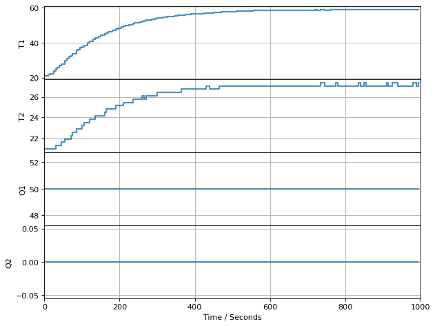
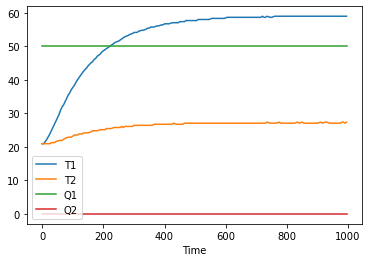
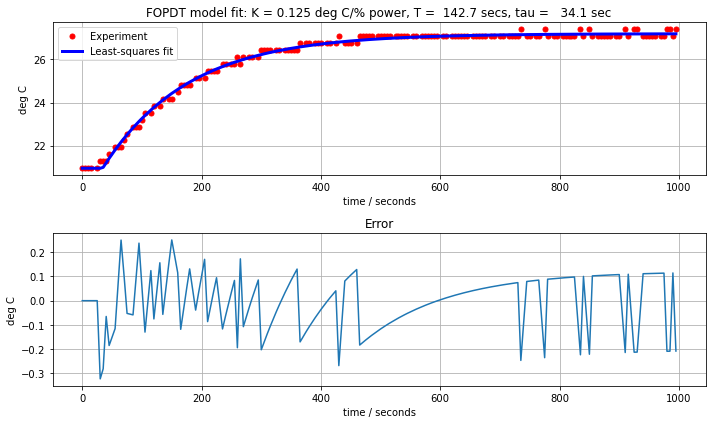
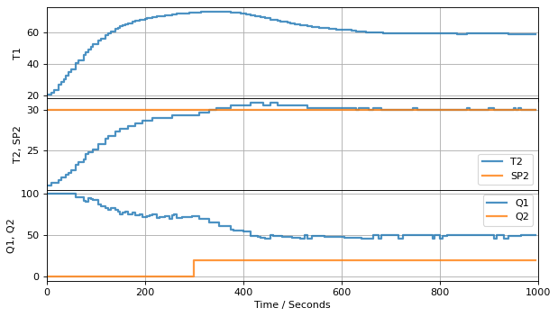
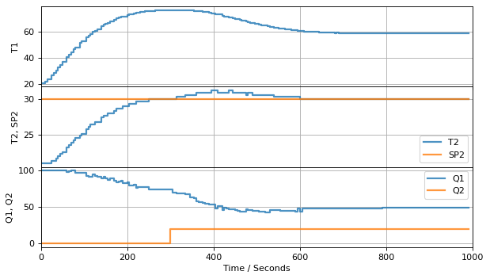
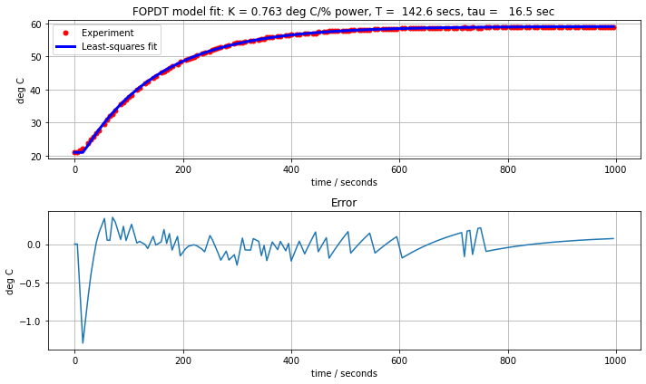
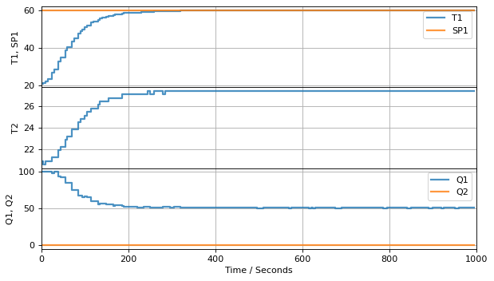
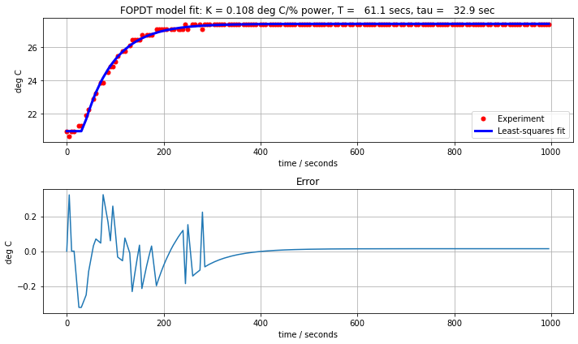
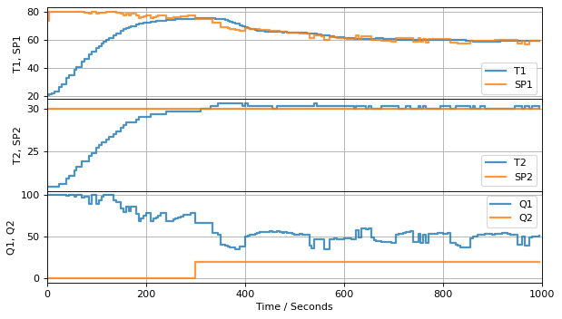

Lab Assignment 4: Solution#
# import all libraries used for this assignment
%matplotlib inline
import matplotlib.pyplot as plt
import numpy as np
import pandas as pd
# use least_squares for FOPDT model fitting
from scipy.optimize import least_squares
# tclab functions
from tclab import TCLab, clock, Historian, Plotter, setup
# operating system library for creating data folder
The following cell consolidates choices for parameters values used throughout this notebook.
# parameters used throughout this notebook
P1 = 255
P2 = 50
# power levels used for step tests and performance evaluation
Q1 = 50
Q2 = 20
# time grid
t_step = 5
t_final = 1000
# tclab setup
connected = False
speedup = 20
# data files
if not os.path.exists('data'):
os.makedirs('data')
datafile_1 = os.path.join("data", "data_lab4_1.csv")
datafile_2 = os.path.join("data", "data_lab4_2.csv")
Exercise 1. PI Control for T2 using Q1#
The exerise comprises of two basic steps:
Step 1: Step tests to identify FOPDT model for Q1 -> T2 dynamics. The same step test data will be used in exercise 2 for the Q1 -> T1 dynamics.
Step 2: Estimate PI controller constants and implement antiwindup PI control.
Step 3: Test controller for setpoint response and disturbance rejection.
Step 1: Model Identification#
Step Test#
TCLab = setup(connected=connected, speedup=speedup if not connected else 1)
with TCLab() as lab:
lab.P1 = P1
lab.P2 = P2
h = Historian(lab.sources)
p = Plotter(h, t_final)
lab.Q1(Q1)
for t in clock(t_final, t_step):
p.update(t)
h.to_csv(datafile_1)

TCLab Model disconnected successfully.
Verify data set#
# load data file into a pandas dataframe
df = pd.read_csv(datafile_1)
print(df.head())
# plot data usinig "Time" as index
df = df.set_index("Time")
df.plot()
Time T1 T2 Q1 Q2
0 0.00 20.9495 20.9495 50 0
1 5.00 20.9495 20.9495 50 0
2 10.13 21.5941 20.9495 50 0
3 15.14 22.2387 20.9495 50 0
4 25.05 23.8502 20.9495 50 0
<AxesSubplot:xlabel='Time'>

Fitting FOPDT Parameters for Q1 -> T2#
We will need to fit at an FOPDT model at three times in the assignment. For that purpose we will take time to write a generic function that we can use for this purpose. The function accepts three array arguments: time t, manipulated variable MV, and process variable PV. The function requires MV to be constant.
def fopdt_fit(t, MV, PV):
assert all(MV.diff()[1:] == 0)
def PV_pred(param):
K, T, tau = param
tau = max(0, tau)
return PV[0] + MV.mean()*np.array([0 if t <= tau else K*(1-np.exp(-(t-tau)/T)) for t in t])
K, T, tau = least_squares(lambda param: PV_pred(param) - PV, [1, 1, 1]).x
fig, ax = plt.subplots(2, 1, figsize=(10,6))
ax[0].plot(t, PV, 'r.', ms=10, label="Experiment")
ax[0].plot(t, PV_pred((K, T, tau)), 'b', lw=3, label="Least-squares fit")
ax[0].set_title(f"FOPDT model fit: K = {K:5.3f} deg C/% power, T = {T:6.1f} secs, tau = {tau:6.1f} sec")
ax[0].set_xlabel("time / seconds")
ax[0].set_ylabel("deg C")
ax[0].legend()
ax[0].grid(True)
ax[1].plot(t, PV_pred((K, T, tau)) - PV)
ax[1].grid(True)
ax[1].set_title("Error")
ax[1].set_xlabel("time / seconds")
ax[1].set_ylabel("deg C")
plt.tight_layout()
return K, T, tau
df = pd.read_csv(datafile_1)
K, T, tau = fopdt_fit(df["Time"], df["Q1"], df["T2"])

Step 2: Controller implementation and testing#
PI Implementation#
We use the PI antiwindup implementation from notebook 3.5.
def PI_antiwindup(Kp, Ki, MV_bar=0, MV_min=0, MV_max=100):
MV = MV_bar
e_prev = 0
while True:
t_step, SP, PV, MV = yield MV
e = PV - SP
MV += -Kp*(e - e_prev) - t_step*Ki*e
MV = max(MV_min, min(MV_max, MV))
e_prev = e
PI Controller Tuning#
Type |
\(K_P\) |
\(K_I\) |
|---|---|---|
P (Ziegler-Nichols) |
\(\frac{T}{K\tau}\) |
|
PI (Astrom and Murray) |
\(\frac{0.15\tau + 0.35T}{K\tau}\) |
\(\frac{0.46\tau + 0.02T}{K\tau^2}\) |
PI (Aggressvie IMC) |
\(\frac{T}{K(\tau + \max(0.1T, 0.8\tau)}\) |
\(\frac{1}{K(\tau + \max(0.1T, 0.8\tau)}\) |
PI (ITAE Tuning) |
\(\frac{0.586}{K}\left(\frac{\tau}{T}\right)^{-0.916}\) |
\(\frac{1.03 - 0 .165\left(\frac{\tau}{T}\right)}{T}K_P\) |
PI (Morari and Zafiriou) |
\(\frac{T + 0.5\tau}{1.7 K \tau}\) |
\(\frac{1}{1.7K}\) |
PI (Ziegler-Nichols) |
\(\frac{0.9 T}{K\tau}\) |
\(\frac{0.3T}{K\tau^2}\) |
# Astrom and Murray Recommendations
def PI_params(params):
K, T, tau = params
Kp = (0.15*tau + 0.35*T)/(K*tau)
Ki = (0.46*tau + 0.02*T)/(K*tau*tau)
return Kp, Ki
Kp, Ki = PI_params((K, T, tau))
print(Kp, Ki)
12.92131486943079 0.12756435409710898
Step 3: Controller Testing#
controller = PI_antiwindup(Kp, Ki, MV_min=0, MV_max=100)
next(controller)
# setpoint SP2
SP2 = lambda t: 30
# unmeasured disturbance
DV = lambda t: 20 if t >= 300 else 0
TCLab = setup(connected=connected, speedup=speedup if not connected else 1)
with TCLab() as lab:
# set up historian and plotter
lab.sources.append(('SP2', lambda: SP2(t)))
h = Historian(lab.sources)
p = Plotter(h, t_final, layout=(('T1',), ('T2', 'SP2'), ('Q1', 'Q2')))
# set power levels
lab.P1 = P1
lab.P2 = P2
for t in clock(t_final, t_step):
lab.Q1(controller.send((t_step, SP2(t), lab.T2, lab.Q1())))
lab.Q2(DV(t))
p.update(t)

TCLab Model disconnected successfully.
Examining the response of T2, it appears the controller is slow in approaching the steady state. This can be improved by increasing the integral action by increasing the value of \(K_I\).
controller = PI_antiwindup(Kp, 1.4*Ki, MV_min=0, MV_max=100)
next(controller)
# setpoint SP2
SP2 = lambda t: 30
# unmeasured disturbance
DV = lambda t: 20 if t >= 300 else 0
TCLab = setup(connected=connected, speedup=speedup if not connected else 1)
with TCLab() as lab:
# set up historian and plotter
lab.sources.append(('SP2', lambda: SP2(t)))
h = Historian(lab.sources)
p = Plotter(h, t_final, layout=(('T1',), ('T2', 'SP2'), ('Q1', 'Q2')))
# set power levels
lab.P1 = P1
lab.P2 = P2
for t in clock(t_final, t_step):
lab.Q1(controller.send((t_step, SP2(t), lab.T2, lab.Q1())))
lab.Q2(DV(t))
p.update(t)

TCLab Model disconnected successfully.
Exercise 2#
The second exercise of the assignment can be broken into four steps:
Step 1: Implement PI control for the inner control.
Step 2: Step test the inner control loop for the response T2 to a step change in setpoint SP1.
Step 3: Implement the outer controller.
Step 4: Test the cascade control configuration.
Step 1: Determining the Inner Controller#
df = pd.read_csv(datafile_1)
Kp_inner, Ki_inner = PI_params(fopdt_fit(df["Time"], df["Q1"], df["T1"]))
print(Kp_inner, Ki_inner)
4.161373089567625 0.050281234666723434

Step 2: Step Testing the Inner Controller#
inner = PI_antiwindup(Kp_inner, 1.4*Ki_inner, MV_min=0, MV_max=100)
next(inner)
# setpoint SP1
SP1 = lambda t: 60
TCLab = setup(connected=connected, speedup=speedup if not connected else 1)
with TCLab() as lab:
# set up historian and plotter
lab.sources.append(('SP1', lambda: SP1(t)))
h = Historian(lab.sources)
p = Plotter(h, t_final, layout=(('T1','SP1'), ('T2',), ('Q1', 'Q2')))
# set power levels
lab.P1 = P1
for t in clock(t_final, t_step):
lab.Q1(inner.send((t_step, SP1(t), lab.T1, lab.Q1())))
p.update(t)
h.to_csv(datafile_2)

TCLab Model disconnected successfully.
Step 3: Implement the Outer Controller#
df = pd.read_csv(datafile_2)
Kp_outer, Ki_outer = PI_params(fopdt_fit(df["Time"], df["SP1"], df["T2"]))
print(Kp_outer, Ki_outer)
7.43233104193439 0.1404944729051455

Step 4: Test the Cascade Control Configuration#
inner = PI_antiwindup(Kp_inner, 1.4*Ki_inner, MV_min=0, MV_max=100)
next(inner)
outer = PI_antiwindup(Kp_outer, Ki_outer, MV_min=21, MV_max=80)
SP1 = next(outer)
# setpoint SP2
SP2 = lambda t: 30
# unmeasured disturbance
DV = lambda t: 20 if t >= 300 else 0
TCLab = setup(connected=connected, speedup=speedup if not connected else 1)
with TCLab() as lab:
# set up historian and plotter
lab.sources.append(('SP1', lambda: SP1))
lab.sources.append(('SP2', lambda: SP2(t)))
h = Historian(lab.sources)
p = Plotter(h, t_final, layout=(('T1','SP1'), ('T2','SP2'), ('Q1', 'Q2')))
# set power levels
lab.P1 = P1
lab.P2 = P2
for t in clock(t_final, t_step):
SP1 = outer.send((t_step, SP2(t), lab.T2, SP1))
lab.Q1(inner.send((t_step, SP1, lab.T1, lab.Q1())))
lab.Q2(DV(t))
p.update(t)

TCLab Model disconnected successfully.